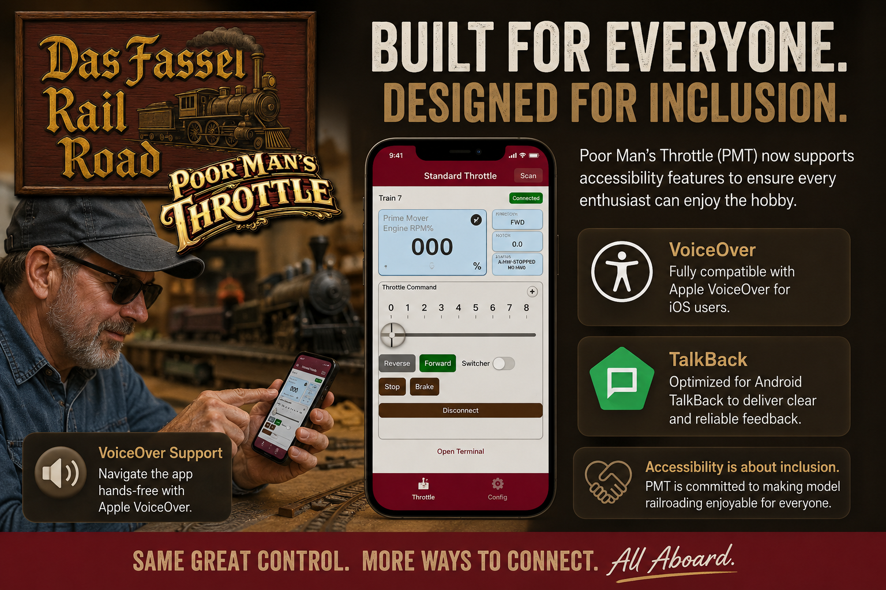
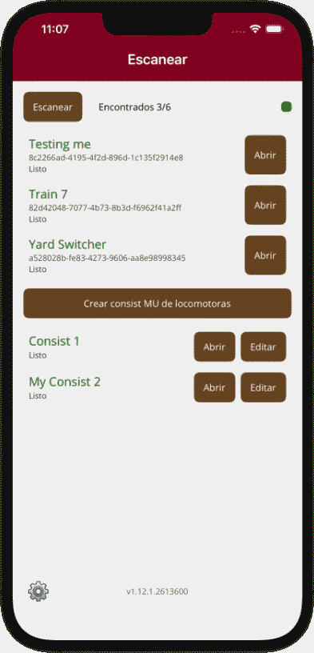
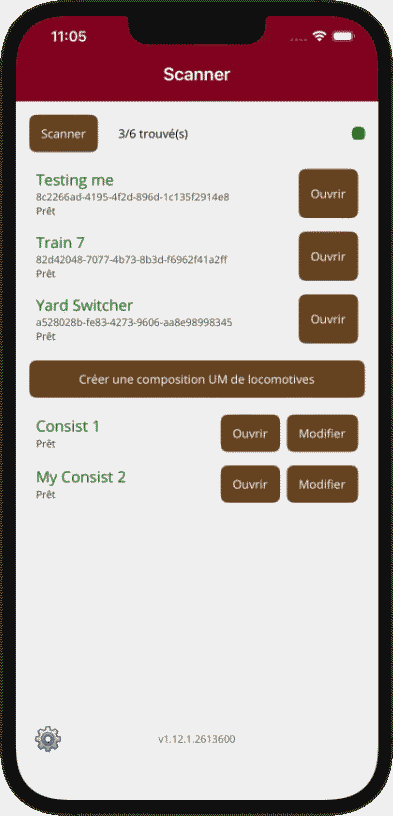
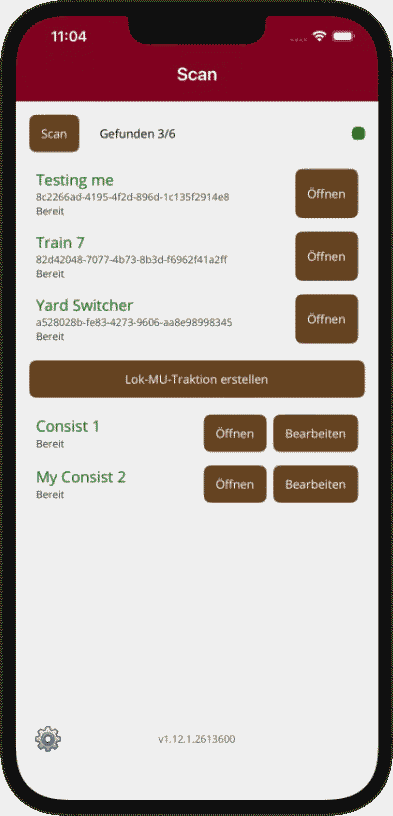
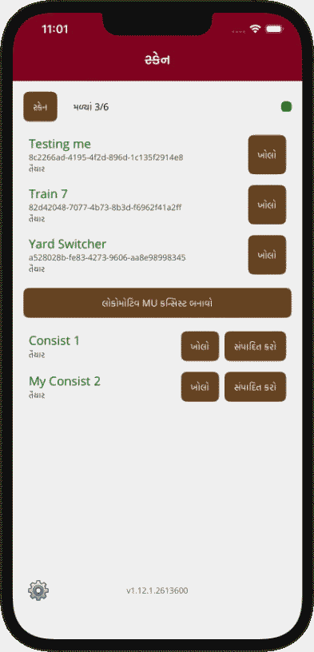

Poor Man’s Throttle now supports multilingual experiences and mobile accessibility features so more people can
enjoy the hobby,
more comfortably, in the language that feels natural on their own device.

A warm request that became an important feature
Two days ago, a user reached out with a simple question that carried a lot of meaning:
could Poor Man’s Throttle work with VoiceOver so he could use it independently?
He wanted to enjoy PMT the same way anyone else would, but many apps in this space were not built with that
in mind.
They looked fine visually, yet they were difficult or impossible to navigate with screen-reading tools.
Of course, I obliged.
That message was a reminder that accessibility is not an extra. It is part of making something welcoming.
So PMT was built to hook into the accessibility APIs on modern mobile devices, making it possible for
visually impaired users
to navigate controls, hear interface labels, and move through the app with greater confidence.
Apple VoiceOver support
VoiceOver is Apple’s built-in screen reader for iPhone and iPad. It speaks interface elements aloud and
helps users navigate
apps through gestures, focus changes, and spoken feedback. PMT connects into these accessibility APIs so
important controls,
labels, and interface structure can be surfaced in a way VoiceOver users can understand and operate.
Android TalkBack support
TalkBack is Android’s equivalent screen reader. It provides spoken feedback and guided navigation for
users who are blind or
have low vision. PMT also hooks into Android accessibility APIs so the experience is not limited to one
platform. The goal is
reliable, consistent support whether a user prefers Apple or Android.
PMT follows the language of the device
One of the most surprising and exciting parts of building PMT has been hearing from users all over the world.
I was genuinely shocked,
in the best possible way, to have people reach out about PMT from Finland, Germany, Belgium, the UK, Brazil,
Canada, and of course the USA.
What started as a project close to home suddenly became something connecting with model railroaders across
countries, languages, and communities.
That is exactly why PMT ties into the localization features of the phone or tablet and automatically selects
the language that most closely matches
the user’s device settings. When someone opens the app, it can already feel familiar from the first screen
without requiring extra steps or setup.
This keeps the experience simple and welcoming. PMT currently supports English, Spanish, French, German,
Finnish, Gujarati, Hindi, Italian, Dutch, Portuguese, Tamil, and others. If the device is set to one of
these supported languages, PMT will choose the closest available match and present the interface accordingly.
For users who prefer something different, that automatic choice can also be overridden manually in PMT’s
settings. So PMT can either follow
the device by default or let the user pick the language that feels right for them.

Spanish

French

German

Hindi
Why this matters: multilingual support and accessibility support are really about the same
thing.
They remove friction. They help people feel included. They make the app more personal, more usable, and more
respectful of the
person holding the device.
That original user request helped shape a better version of PMT. What started as one person asking whether he
could use VoiceOver became
a broader commitment: make PMT easier to access, easier to understand, and easier to enjoy for more people.
The result is an app that
listens to the device, adapts to the user, and leaves room for manual choice when that is the better fit.